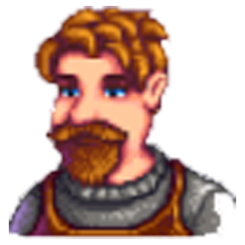
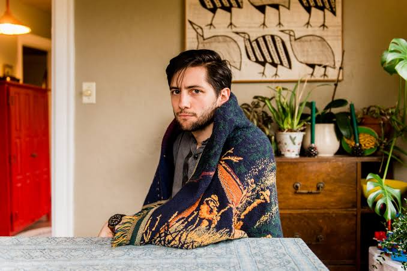

Live the Country Life
in Stardew Valley
Can you learn to live off the land and turn these overgrown fields into a thriving home? With a little dedication, you might just be the one to restore Stardew Valley to greatness!
Stardew Valley is a farm-life simulation game. Players create a character, who inherits a plot of land and a small house in a small village called Pelican Town, located in the titular Stardew Valley.
Players may select from several different farm types, each with a unique theme and different benefits and drawbacks.
Explore Stardew Valley
Players have 7 farms to choose from
-
 Forest
Forest
-
 Beach
Beach
-
 Four Corners
Four Corners
-
 Hill-Top
Hill-Top
-
 Riverland
Riverland
-
 Standard
Standard
-
 Wilderness
Wilderness
- Players can engage in fishing, cooking, crafting, and exploring caves with materials and ores to mine or creatures to combat.
- Players can take on quests to earn money or complete collections of materials (“bundles”) to restore the town's Community Center or pay certain amounts of money to complete JojaMart bundles. Completing bundles rewards players with various items, including seeds and tools. Completing multiple bundles grants players access to new areas and game mechanics, such as a desert.[3]
- All activities must be metered against the players current health and exhaustion level, and the game’s internal clock. The player can consume food, which is a source of replenishing health and energy, and allows the player to complete more tasks in a “day”.
- The game uses a simplified calendar, each year having four 28-day months that represent each season, that determines which crops can be grown and which activities can be beneficial. Later, players can restore a greenhouse and access an island that can grow any crop regardless of the season.
Meet the Characters
- Caroline
- Emily
- Evelyn
- Jas
- Jodi
- Marnie
- Maru
- Robin
- Sandy
- Haley
-
 Abigail
Abigail
- Leah
-  Klint
- Demetrius
- George
- Dwarf
- Gus
- Kent
- Krobus
- Lewis
- Linus
-
 Pierre
Pierre
- Shane
- Vincent
- Willy
- Wizard
- Elliott
- Alex
- Harvey
- Penny
- Sam
- Sebastian
It's Festival Season!
Festivals are special events in Stardew Valley. Mayor Lewis will send the player a letter in advance of each festival, describing when and where it will take place. On the day of the festival, a pop-up on left-hand side of the screen will let the player know when the festival has begun. If they choose to attend a festival (other than the Night Market), upon leaving they will be returned to The Farm late at night.
If it is a festival day other than the Night Market, animals do not need to be fed; the game will automatically consider them fed. Speaking to villagers at festivals will increase friendship points, the same as any other day. Some festivals can have special effects on friendship, such as increasing friendship with every known villager, or increased friendship for gifting.
Seasonal Festivals
- Egg Festival
- Flower Dance
- Luau
- Dance of the Moonlight Jellies
- Stardew Valley Fair
- Spirit's Eve
- Festival of Ice
- Night Market
- Feast of the Winter Star
Community
Stardew Valley has a very friendly modding community!
There are many places to get in touch with mods including:
- Discord
- Official Forums
- Mod Sites
Sources
Stardew Valley was created by ConcernedApe
Stardew Valley, originally titled Sprout Valley, was created by American indie game designer Eric Barone under the alias of ConcernedApe. In 2011, Barone had graduated from the University of Washington Tacoma with a computer science degree.
Other Sources:
Stardew Valley Wiki Page
Stardew Valley - Official Site
Stardew Valley - Wikipedia